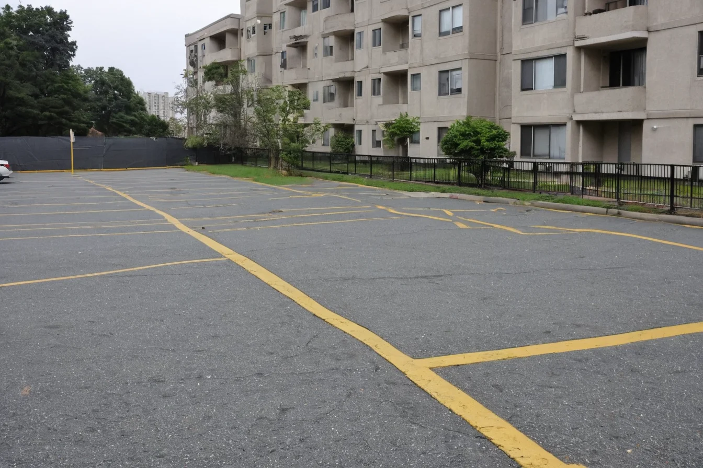
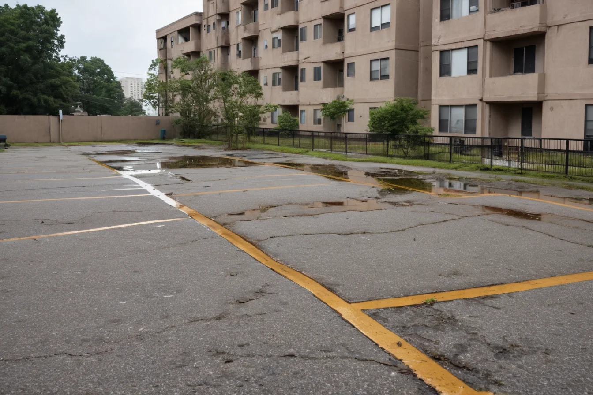

우리 현장의 증상은 무엇인가요?
사진에서 비슷한 상황을 골라 확인해 보세요.
부대토목부터 포장·배수·조경·유지보수까지
외부공간의 여러 공종을 함께 살핍니다.
서로 맞물리는 공종을 함께 살핍니다.
사진에서 비슷한 상황을 골라 확인해 보세요.
움직여서 문제 상황과 개선된 모습을 비교해 보세요.


문제 상황 예시개선 모습 예시AI 이미지 · 실제 시공 사진 아님가능한 확인 지점을 간단히 살펴봅니다. 실제 원인은 현장 조사가 필요합니다.
포장 표면 · 포장 하부 · 기층·지반 · 배수구
이해를 돕기 위한 개념도입니다. 실제 설계도나 시공 기준이 아닙니다.
가능한 점검 항목의 예시입니다. 원인과 공법은 현장 조건 및 전문가 검토에 따라 결정됩니다.
회사 정보와 시공 범위를 먼저 확인하세요.
아래는 온라인 문의 양식의 디자인 예시입니다. * 필수 항목
이 시안에서는 온라인 문의가 전송되지 않습니다. 실제 문의는 전화로 해주세요.